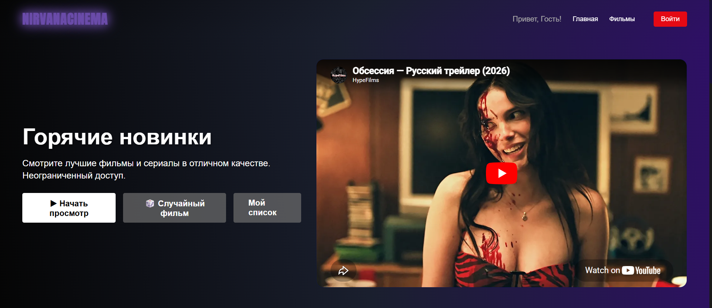
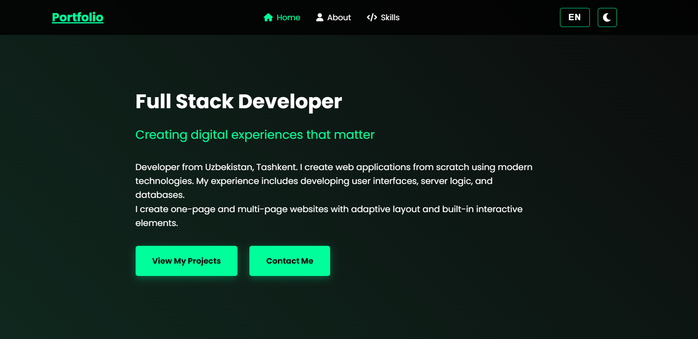
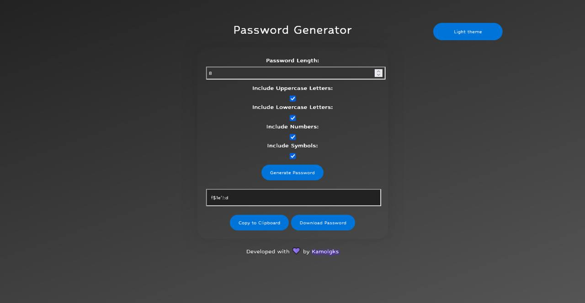

NirvanaCinema
ActiveAn online cinema with a clean interface and an ad-free viewing experience.
- Python
- PostgreSQL
- TMDB API
A FEW THINGS I'VE BUILT
Web applications, useful little tools, and bots that make everyday tasks easier.

An online cinema with a clean interface and an ad-free viewing experience.
A web tool for converting files, built with Python and Flask.

My personal corner of the web. Projects, experience and a way to get in touch.

A Flask application for generating random passwords.
Find and share GIFs right inside Telegram using the Giphy API.
Current weather information delivered through a simple Telegram bot.
A Telegram bot for keeping track of your tasks.